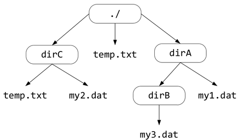

Lab de Processos¶
Neste laboratório, você implementará um shell Unix simples (como tantos outros que existem, bash, csh etc.) chamado inspersh. A função básica de um shell é aceitar comandos como entradas na linha de comando e executar os programas correspondentes em resposta.
O propósito deste laboratório é ajudar você a aprender os fundamentos das chamadas de sistema para criar e gerenciar processos conforme você implementa seu programa.
Você escreverá o código para seu programa shell no arquivo inspersh.c, que estará em branco sem nenhuma função, isto desafiará suas habilidades de desenvolvedor, pois terá que aprender a usar diversas funções das bibliotecas da linguagem C, uma sugestão é que para cada função que for utilizar, teste o seu funcionamento (entrada e saída) em um programa separado para depois utilizar na implementação do inspersh.c, e lembre-se, é muito importante que você leia com atenção as especificações das funções no manual da função, para isso você pode usar o comando man no terminal. A seguir seguem algumas boas boas práticas de programação que poderão lhe ajudar:
- Planeje a totalidade da sua tarefa: Crie um esqueleto de como todo o seu código ficará. Isso evitará que você precise reestruturar todo o seu código para adicionar um único recurso novo;
- Estruture seu código em funções modulares: Você não quer depurar um
whilede1500linhas dentro demain; - Trabalhe incrementalmente: Implemente um recurso, teste, depure, siga em frente; e
- Faça o código legível: Uma boa nomenclatura e espaçamento tornarão seu código muito mais legível.
Iniciando seu shell¶
O shell de ser iniciado a partir do diretório onde foi carregado o programa, em seguida deve ficar executando um loop como o trecho abaixo:
enquanto comando diferente de exit
1 - Imprima um prompt de comando
2 - Leia o comando da entrada padrão
3 - Executa o comando
fork/execvp/waitpid. Para identificar um comando externo, considere que se o comando não for um dos comandos internos listados a seguir, ele é um comando externo.
Os argumentos de comando serão separados por espaços em branco, não se preocupe com espaçamento irregular em entradas de comando (ou seja, espaço em branco extra antes e depois de cada token). Isso é considerado comportamento indefinido e não será testado. Você é livre para tornar seu código tão robusto quanto quiser, mas testaremos apenas os casos básicos com um espaço entre os tokens.
Avaliação¶
O inspersh será avaliado de forma manual usando uma rubrica que descreve as funcionalidades implementadas. Quanto maior o número de funcionalidades maior será a nota.
FASE 0¶
- O programa
inspersh.cnão compila ou compila com warnings. - Não preencheu o arquivo
README.md - Não entregou o vídeo explicativo;
- O programa não implementa algum dos requisitos da rubrica da fase 1.
NOTA desta fase: 0.0¶
FASE 1:¶
- Video explicativo com áudio e a tela de visível com a execução da implamentação, comentando as informações colocadas no arquivo
README.md. -
Preencheu o arquivo
README.mdcom as seguintes informações:- Seu nome e uma descrição de qual fase do laboratório você conseguiu completar;
- Relate também quaisquer bugs ou erros identificados no seu shell;e
- Alguma decisão de design interessante que você gostaria de compartilhar.
-
O programa
inspersh.ccompila sem warnings. Para compilar use:gcc inspersh.c -Wall -Wno-unused-result -g -Og -o inspersh -
O programa printa o prompt do shell, a partir do diretório onde foi carregado o programa no formato
(pid=<pid>)<path>$, como por exemplo:Sendo que o(pid=1234)/home/lab02$<pid>é o ID do processo atual e<path>é o caminho completo para o diretório de trabalho atual. -
O programa lê e interpreta uma linha com o comando que será executado, pela entrada padrão (
stdin), para isso será necessário dividir a entrada com base nos espaços. Um token é qualquer sequẽncia de caracteres delimitado pelo início e fim da linha, ou por espaços. O primeiro token é considerado o comando, e todos os tokens seguintes são referidos como argumentos. -
Implmenta os comandos internos:
exit: encerra oinspershelibera todos os recursos.cd <dir>: o diretorio atual é alterado para o diretório informado<dir>. Se o diretório informado começar com/o diretorio deve ser atualizado a partir da raiz do sistema de arquivo, caso contrário deve ser atualizado em relação ao diretório atual. Caso o argumento<dir>não seja informado o shell deve regressar ao diretório inicial onde foi carregado o programa. Se por algum motivo<dir>não for um diretório válido, oinspershdeverá manter seu diretório de trabalho atual e deverá imprimir:dir: diretorio nao existe., além disso não é necessário tratar o comandocd .., veja abaixo um trecho de execução do comandocd:(pid=1234)/home/lab02$ cd testes (pid=1234)/home/lab02/testes$ cd dir_imaginario dir_imaginario: diretorio nao existe. (pid=1234)/home/lab02/testes$ cd teste2 (pid=1234)/home/lab02/testes/teste2$ cd (pid=1234)/home/lab02$ls: lista conteúdo de um diretório (arquivos e outros diretórios), informando se um elemento é um diretório ou arquivo. Se for um arquivo deve ser impresso o tamanho do arquivo em bytes, e por fim o nome do elemento no sistema de arquivos, ignorem os arquivos e diretórios que comecem com caractere.(ponto), este não deve ser listado, abaixo um exemplo da execução do comandols:Não se preocupe aqui com a ordem em que aparecem os elementos que estão no diretório, o importante é informar corretamente as informaçoes dos elementos.(pid=1234)/home/lab02$ ls d - - um_diretorio a - 7566 - inspersh.c a - 16526 - processos.md a - 19064 - processo.html a - 332496 - inspersh d - - testes (pid=1234)/home/lab02$ -
Dica de implementação: leia atentamente os manuais (
man) das funções a seguir, elas poderão lhe ajudar a atender os requisitos dessa fase.getpid,getcwd,fgets,chdir,opendir,readdir,closedirestat(man 2 stat)-
NOTA até essa fase: 3.0¶
FASE 2¶
-
Programa
inspersh.croda sem erros no valgrind. Para testar o seu program use:valgrind --leak-check=yes ./inspersh -
Implementa os comandos externos: se o comando não for um comando interno do
inspersh.c(ou seja, qualquer comando diferente decd,ls,exit), oinspershdeve considerar o nome do comando como o nome de um arquivo executável, como por exemplos os comandos:cat, top, pwd, ps, /usr/bin/ls -l, echo hello, sleep 5, lscpu, ...O código desses comandos deve ser executado em um processo diferente daquele que executa o
inspersh.c, para tanto você deve usarfork(),execvp()ewaitpid(). Caso tenha sucesso na execução do comando externo deve ser impressa a seguinte mensagem:(pid=<pid>):comando externo [<cmd>] executado com sucesso., se o comando externo falhar no momento da chamada doexecvpoinspershdeve enviar uma mensagem apropriadas, como por exemplo:(pid=<pid>):falha na execucao do comando externo [<cmd>]. Considere que<pid>é o valor do pid do executável e<cmd>é o nome do comando. Veja um exemplo de execução dos comandos externos:(pid=1234)/home/lab02$ sleep 5 (pid=4321):comando externo [sleep] executado com sucesso. (pid=1234)/home/lab02$ SLEEP 5 (pid=4322):falha na execução do comando externo [SLEEP]. (pid=1234)/home/lab02$ echo Ola mundo !! Ola Mundo !! (pid=4327):comando externo [echo] executado com sucesso. (pid=1234)/home/lab02$ pwd /home/lab02 (pid=4327):comando externo [pwd] executado com sucesso. (pid=1234)/home/lab02$IMPORTANTE: Não é permitido o uso da função
system()nesse lab, caso use será atribuído a nota da FASE 0. -
Programa captura
Ctrl+C: geralmente quando pressionamosCtrl+C, o programa em execução no primeiro plano é finalizado, no entanto, oinspersh.cdeve verificar se há outro programa em primeiro plano em execução no momento e, se houver, ele deve finalizar esse processo usando o sinalSIGINT, e apresentar uma mensagem apropriado como(pid=<pid>):comando externo [<cmd>] finalizado com Ctrl+C., caso contrário oinspersh.cignora oCtrl+C.+ Dica de implementação: para aguardar os comandos externos finalizados com(pid=1234)/home/lab02$ sleep 5 ^C (pid=4323):comando externo [sleep] finalizado com Ctrl+C. (pid=1234)/home/lab02$Ctrl+Cutilize a funçãowaitpid()com argumento não bloqueante, para tanto leia atentamente o manual dessa função (man waitpid).
NOTA até essa fase: 5.0¶
FASE 3¶
Nessa fase o seu shell deve suportar o armazenamento do histórico de comandos executados, por conta disso o executável inspersh deverá ser inicializado da seguinte forma:
$./inspersh <arquivo_historico>
Se o arquivo não existir, você deve tratá-lo como um arquivo vazio, o formato do arquivo de histórico deve ser uma lista comandos executados. Ao sair, o inspersh deve anexar os comandos da sessão atual no arquivo de histórico fornecido, no mesmo arquivo informado no início da execução do shell. Exemplo do arquivo historico.txt:
cd testes
echo Ola Mundo!
Considere o inspersh executando carregando o arquivo historico.txt:
$./inspersh historico.txt
(pid=1234)/home/lab02$ cd dir_imaginario
dir_imaginario: diretório nao existe.
(pid=1234)/home/lab02$ exit
Exemplo como ficaria o arquivo de historico.txt após a execução do inspersh:
cd testes
echo Ola Mundo!
cd dir_imaginario
Note que comando tanto os comandos executados com sucesso e com falha são armazenados no histórico, e o comando exit não é armazenado no arquivo de histórico.
-
Implementa comandos para acessar o histórico do shell a partir do prompt do
inspersh:!: Imprime para cada comando (em ordem cronológica) seu número de linha (indexado a partir do0), uma tabulação, o comando em si e uma nova linha, e é claro, o comando!não é armazenado no histórico.(pid=1234)/home/lab02$ ! 0 cd testes 1 echo Ola Mundo! 2 cd dir_imaginario (pid=1234)/home/lab02$!#: Reexecuta o #ésimo comando no histórico e armazena a nova execução do comando no histórico, antes de executar o #ésimo comando de ser impresso na tela. Se#não for um índice válido, imprimaindice invalido(essa mensagem não deve ser armazenado no histórico). E por fim o comando!#não é armazenado no histórico, o exemplo abaixo assume que o histórico está vazio:(pid=1234)/home/lab02$ echo Echo Algo! Echo Algo! (pid=1237):comando externo [echo] executado com sucesso. (pid=1234)/home/lab02$ echo Outro echo Outro echo (pid=1239):comando externo [echo] executado com sucesso. (pid=1234)/home/lab02$ ! 0 echo Echo Algo! 1 echo Outro echo (pid=1234)/home/lab02$ !1 echo Outro echo Outro echo (pid=2230):comando externo [echo] executado com sucesso. (pid=1234)/home/lab02$ !4 indice invalido (pid=1234)/home/lab02$ ! 0 echo Echo Algo! 1 echo Outro echo 2 echo Outro echo (pid=1234)/home/lab02$!<prefixo>: Imprime e executa o último comando que tem o prefixo especificado. Se nenhuma correspondência for encontrada, imprima a mensagem de errocomando nao encontradoe não armazene nada no histórico. Caso encontre alguma correspondência, imprima o comando antes de executá-lo. Importante, comando!<prefixo>não é armazenado no histórico, mas o comando que está sendo executado (se houver) é, o exemplo a seguir assume um histórico vazio:(pid=1234)/home/lab02$ echo Echo Algo! Echo Algo! (pid=1237):comando externo [echo] executado com sucesso. (pid=1234)/home/lab02$ echo Outro echo Outro echo (pid=1239):comando externo [echo] executado com sucesso. (pid=1234)/home/lab02$ ! 0 echo Echo Algo! 1 echo Outro echo (pid=1234)/home/lab02$ !echo echo Outro echo Outro echo (pid=2230):comando externo [echo] executado com sucesso. (pid=1234)/home/lab02$ !eco comando nao encontrado (pid=1234)/home/lab02$ ! 0 echo Echo Algo! 1 echo Outro echo 2 echo Outro echo (pid=1234)/home/lab02$
NOTA até essa fase: 8.0¶
FASE 4¶
Nessa fase o comando interno ls deve ser incrementado. Considera a Figura 1 que apresenta uma de árvore de diretórios e arquivos de um sistema de arquivos. O seu programa inspersh.c deve implementar as seguintes funcionalidades:

Figura 1: Exemplo de árvore de diretórios e arquivos
-
Implementa o argumento
-opara o comandols, o argumento indica ao comando ao comandolsque conteúdo do diretorio corrente deve ser impressa em ordem alfabética, colocando os diretórios antes dos arquivos. Considere que o executávelinspershestá na raiz da árvore acima, a saída para o comandols -oseria:./dirA ./dirC ./temp.txt -
Implementa o argumento
-nque percorre, a partir do diretório corrente, toda a árvore de diretório por nível, considere que o executávelinspershestá na raiz da árvore apresentada na Figura 1, a saída para o comandols -nseria:./dirA ./dirC ./temp.txt ./dirA/dirB ./dirA/my1.dat ./dirC/my2.dat ./dirC/temp.txt ./dirA/dirB/my3.dat -
Implementa o argumento
-hque faz com que o comandolspercorra toda árvore de diretório a partir do diretório corrente explorando o primeiro diretório completamente antes de voltar e explorar o próximo diretório no mesmo nível, repetindo esse processo para cada diretório que será percorrido. Considere que o executávelinspershestá na raiz da árvore apresentada na Figura 1, a saída para o comandols -hseria:./dirA ./dirA/dirB ./dirA/dirB/my3.dat ./dirA/my1.dat ./dirC ./dirC/my2.dat ./dirC/temp.txt ./temp.txt
NOTA até essa fase: 10.0¶
IMPORTANTE: Considere as fases como cumulativas, ou seja, cada versão deve manter as funcionalidades da fase anterior e acrescentar novas. Por exemplo, a versão da Fase 2, além de executar os comandos externos deve continuar os comandos internos implementado na Fase 1, e assim por diante.
Notas de programação¶
- A linha de comando do seu programa precisa manipular linhas de entrada de até 1024 caracteres;
- Um comando não ultrapassará 8 tokens; e
- Em diretório teremos no máximo 128 elementos (diretórios e arquivos).
- Considere que o tamanho máximo de um
<path>será de1024caracteres.
Restrições¶
Esta atividade serve como avaliação dos conceitos vistos na disciplina. Portanto, algumas restrições serão aplicadas ao código de vocês:
- todo trabalho com arquivos deverá ser feito usando as APIs POSIX vistas em aula. Não é permitido o uso de funções da
Standard I/Opara manipulação de arquivos, como por exemplofopen(),fdopen(),fread(),fclose(), entre outras . - se você usar algum trecho de código da documentação (ou de outra fonte), coloque uma atribuição em um comentário no código.
- Fica proibido o uso de ferramentas de geração de código automático por IA, como por exemplo o ChatGPT.
O não atendimento dessas restrições resultarão em atribuição da nota zero para esse lab.
Entrega¶
Você deverá colocar o programa fonte inspersh.c na pasta lab/02-lab-processos em seu repositório de atividades (github), na branch principal, e fazer upload (push) do arquivo fonte no seu repositório, não precisa soltar tag. Lembre-se de se atentar ao prazo de entrega definido aqui!.